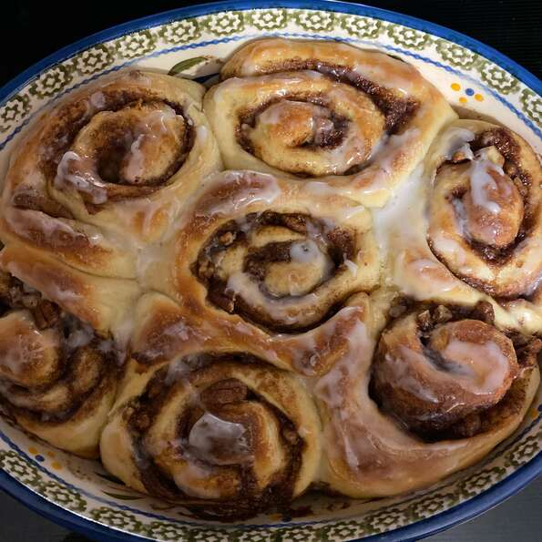

Soft Cinnamon Rolls

Description
Cinnamon rolls that you make the night before and bake the next morning. Let your morning be sweet so that your day goes smoothly. With a delicious and soft breading, you won't be able to eat just one.
Ingredients
- 1 (.25 ounce) package active dry yeast
- 3/4 cup warm water (110 degrees F/45 degrees C)
- 3/4 cup white sugar
- 3/4 teaspoon salt
- 1 egg, room temperature
- 2 1/2 cups bread flour
- 1/4 cup butter, softened
- 1 tablespoon ground cinnamon
- 1/2 cup brown sugar
Steps
-
In a small bowl, dissolve yeast in warm water. Let stand until creamy, about 10 minutes.
-
In a large bowl, combine the yeast mixture with the sugar, salt, egg and 1 cup flour; stir well to combine. Stir in the remaining flour, 1/2 cup at a time, beating well with each addition. When the dough has pulled together, turn it out onto a lightly floured surface and knead until smooth and elastic, about 8 minutes. Cover with a damp cloth and let rest for 10 minutes.
-
Lightly grease an 8x8 inch square baking pan. Roll dough out on a lightly floured surface to 1/4 inch thick rectangle. Smear the dough with butter and sprinkle with cinnamon and brown sugar. Roll up the dough along the long edge until it forms a roll. Slice the roll into 16 equal size pieces and place them in the pan with the cut side up.
-
Cover pan with plastic wrap and refrigerate overnight or cover and let rise at room temperature until doubled in volume, about 45 minutes
-
Preheat oven to 400 degrees F (200 degrees C). Bake rolls until golden brown, about 20 minutes.
Return To Recipes